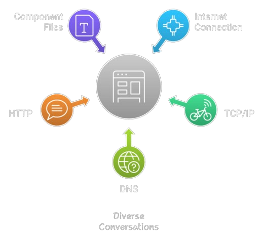

Clients and Servers
Computers connected to the internet are called clients and servers. A simplified diagram of how they interact might look like this:
Clients are the typical web user’s internet-connected devices (for example, your computer connected to your Wi-Fi, or your phone connected to your mobile network) and web-accessing software available on those devices (usually a web browser like Firefox or Chrome).
Servers are computers that store webpages, sites, or apps. When a client device wants to access a webpage, a copy of the webpage is downloaded from the server onto the client machine to be displayed in the user's web browser.
The Other Parts of the Toolbox
In addition to the client and the server, there are several other components that make the web work:
- Your Internet Connection: Allows you to send and receive data on the web, similar to the street connecting your house and a shop.
- TCP/IP: These are communication protocols that define how data travels across the internet. Think of them like a car or a bike that transports you from place to place.
- DNS: Domain Name System is an address book for websites, helping your browser find the IP address of a website.
- HTTP: Hypertext Transfer Protocol defines the language clients and servers use to speak to each other.
- Component Files: Websites are made up of code files (HTML, CSS, JavaScript) and assets (images, music, videos, etc.).

DNS Explained
Real web addresses aren’t the memorable strings you type into your address bar, like "mozilla.org". These are known as IP addresses, which are represented as numbers like `192.0.2.172`.
The Domain Name System (DNS) converts these IP addresses into human-readable web addresses, making it easier to navigate the internet. Websites can be accessed directly via their IP addresses, but DNS allows us to use simpler names instead.
Packets Explained
Data transferred between the client and server is broken down into small chunks called "packets". These packets allow faster and more reliable communication. If packets are lost or corrupted during transfer, only small portions of the data need to be retransmitted instead of the entire file. This also allows multiple users to download the same website at the same time.
Order in which Component Files are Parsed
When a browser sends requests to a server for an HTML file, that file often contains references to external CSS and JavaScript files. The browser follows a specific order for parsing these files:
- The browser first parses the HTML file.
- As it parses, the browser sends requests for any CSS and JavaScript files referenced in the HTML.
- The browser builds an in-memory Document Object Model (DOM) tree from the HTML, a CSSOM tree from the CSS, and compiles the JavaScript.
- Once the browser processes the files, the page is displayed to the user and becomes interactive.